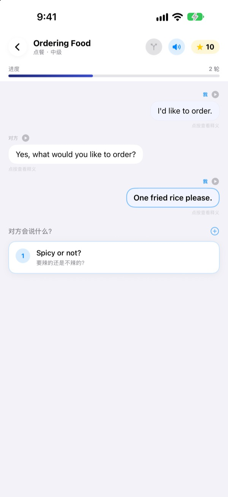
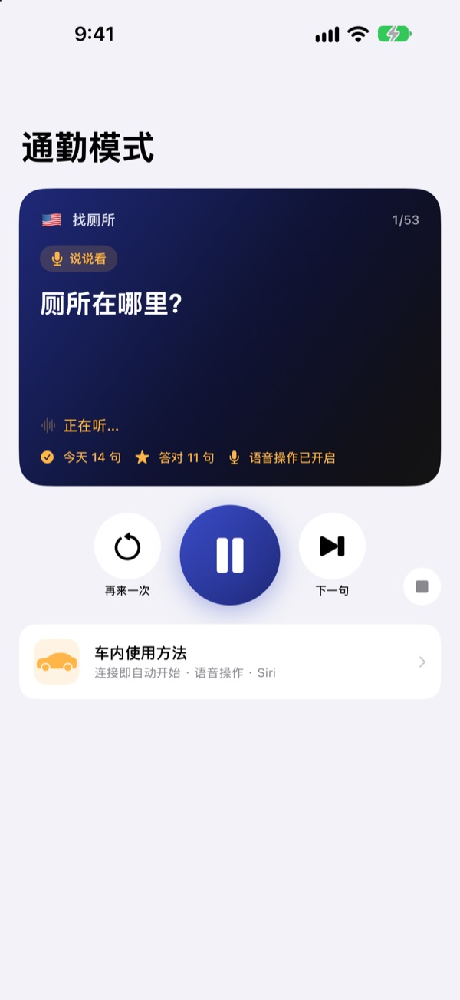
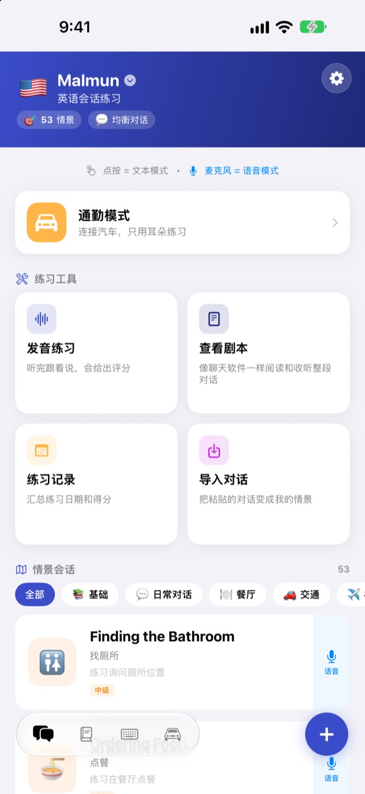
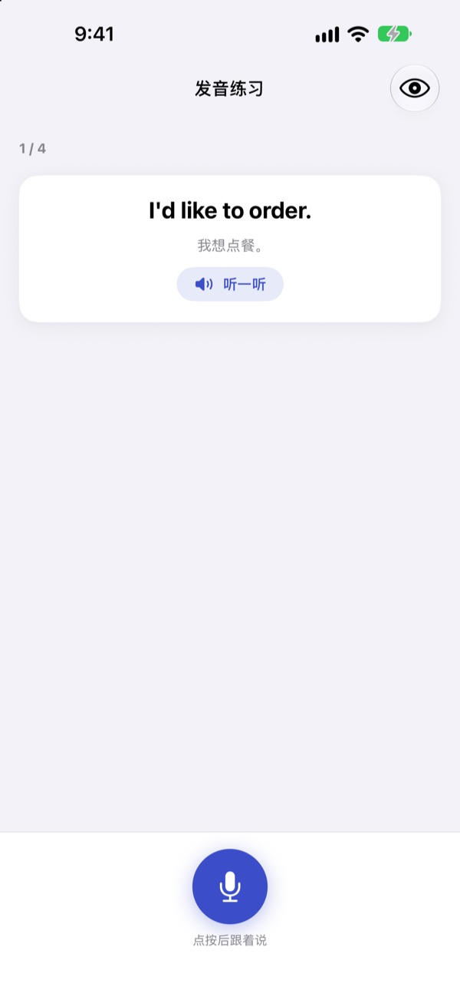

不再卡壳，
这一次你先开口
Malmun 是一款口语练习应用，你选的每个回答都会把对话带向不同的方向。从英语、韩语、日语、西班牙语和印尼语中选一门来学，开车通勤时不用看屏幕，只用耳朵和声音就能练。
分支对话、发音练习和单词本均可免费使用。

亲手把对话接下去
这是应用里的印尼语对话“早安问候”。每选一句，对话就会拐向另一条路。
句子背熟了，一到回答就卡住？
课本里的对话总是照着剧本走，可现实中的对方常常会说出你没想到的话。Malmun 让你提前把一段对话的各个分支都走一遍，无论对方怎么接，你都能把下一句说出口。连双手被占着的通勤路上，也能变成练习时间。
边开车边用耳朵练
通勤模式通过蓝牙或 CarPlay 从车载音箱播放。先听意思，提示音响起后留时间让你自己说，最后正确答案先慢速播一遍，再以正常语速播一遍。
用方向盘按键切换和重听，轮到你时也可以直接说下一个、再来、慢一点。导航播报时会自动暂停。

旅行和生活的场景一应俱全
每种语言都有 53 段情景会话，从基础表达、日常聊天，到餐厅、交通、机场、酒店、购物、观光和紧急情况。
学印尼语的话还有更多：5 段原创闲聊、3 门每门 6 个场景的一日课程和每周课表，以及出差马上用得上的 100 个单词。

说得对不对，一看就知道
发音练习会给出分数，并用颜色标出你说对的词和漏掉的词。
在对话剧本里，整段对话像聊天记录一样展开，可以连着听，也可以遮住意思自测。

三步就能开始
- 1
选择要学的语言
点主屏幕最上方的国旗即可切换。我的句子和单词本按语言分开保存。
- 2
打开一段对话
点选回答是文字模式；点麦克风开口说，就是自动找出最接近回答的语音模式。
- 3
开车时用通勤模式
把手机连上车，按下播放就行，不用看屏幕。
通勤模式怎么操作
- 方向盘：下一曲
- 下一句
- 方向盘：上一曲
- 同一句再听一遍
- 播放键
- 暂停、继续
下一个·下一句- 下一句
再来·再说一遍- 再听一遍
慢一点·快一点- 调整朗读速度
下一个场景- 进入下一段对话
暂停·停止- 停止练习
- 对 Siri 说“开始Malmun通勤练习”
- 不碰手机就开始
语音指令只在提示音之后、轮到你说的时候才会听。句子说对了，会提示“很好！”。当前句子显示在车载屏幕的播放信息里，CarPlay 上没有单独的应用界面。
几乎全部免费，想练更多就用 Malmun Pro
免费
- 分支闲聊和一日课程（印尼语）
- 情景会话中的基础表达和日常聊天
- 通勤模式每天 3 个场景
- 发音练习、对话剧本、导入对话、练习记录
- 我的句子、单词卡、句子键盘
- 和朋友分享场景、用 AI 生成场景
Malmun Pro
- 全部情景会话：餐厅、交通、机场、酒店、购物、观光、紧急情况
- 通勤模式不限次数
- 6 种语言通用
按年订阅，或一次买断终身使用
价格请在应用内或 App Store 查看。年度订阅如未在当期结束前至少 24 小时取消，将自动续订。
常见问题
在车里怎么用？
用蓝牙或 CarPlay 把 iPhone 连到车上，打开通勤模式，按下播放。声音从车载音箱播出，当前句子显示在“正在播放”里。也可以对 Siri 说“开始Malmun通勤练习”；或者在快捷指令 App ▸ 自动化里设置一次，连上 CarPlay（或车载蓝牙）时运行“开始通勤练习”，上车就能自动开始。
麦克风会一直在听吗？
不会。只在提示音之后、轮到你说的时候用手机麦克风听，听到的内容只在设备上处理。指令用应用的界面语言说。
可以学哪些语言？
英语、韩语、日语、西班牙语和印尼语。应用用中文显示时，句子的意思和语音指令都是中文。
发音总是识别不准。
语音识别按你正在学的语言运行。请换个安静的地方试试，并确认设备上已下载该语言的语音识别。
怎么添加键盘？
前往 设置 ▸ 通用 ▸ 键盘 ▸ 键盘 ▸ 添加新键盘，选择 Malmun 键盘。打字时点地球键即可切换，不需要开启“完全访问”。键盘上显示哪些句子，可以在主屏幕右下角的键盘图标 ▸ 管理键盘里逐条开关。
看不到朋友分享的场景。
和朋友分享是通过 iCloud 实现的，两个人都需要登录 iCloud。如果还是看不到，请彻底关闭应用后重新打开。
用 AI 生成场景需要什么？
在应用里填入你自己的 Anthropic API 密钥，再写一个主题，就能生成新的对话。没有密钥也不影响其他功能。
怎么取消订阅或申请退款？
付款由 Apple 处理。取消订阅请前往 iPhone 设置 ▸ Apple 账户 ▸ 订阅 ▸ Malmun。退款请到 reportaproblem.apple.com 向 Apple 申请。
换了手机，Pro 没了。
用同一个 Apple 账户登录后，在 Malmun 里点 设置 ▸ Malmun Pro ▸ 恢复购买。
我的学习记录存在哪里？
不需要注册账号。学习记录只保存在你的设备和你自己的 iCloud 里，没有广告，也不追踪。只会发送用于改进应用的匿名使用统计和错误诊断。问题和功能建议也可以提到 GitHub Issues（github.com/M1zz/IndonesianSmallTalk/issues）。
有问题或建议，请发邮件到 leeo@kakao.com。也可以在应用的 设置 ▸ 发送反馈，或 Instagram @lee25_ios 联系我们。